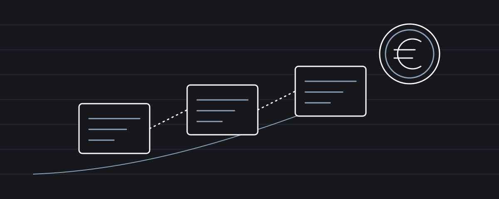

Φορολογία · Ενημέρωση: 6 Νοεμβρίου 2026
Φορολόγηση κρυπτονομισμάτων: ένα πλαίσιο που άργησε, αλλά είναι πλήρες;
Τι προβλέπει το νέο πλαίσιο για τα κρυπτοστοιχεία, πώς συγκρίνεται με την Ευρώπη και ποια ερωτήματα μένουν ανοιχτά για τον λογιστή.

Μαρία Παπαδάκη
Οικονομολόγος - Λογίστρια Α΄ τάξης
Για χρόνια, τα κρυπτονομίσματα κινούνταν σε μια «γκρίζα ζώνη» της ελληνικής φορολογικής νομοθεσίας. Ο επενδυτής δεν ήξερε αν και πώς πρέπει να δηλώσει τα κέρδη του, και ο λογιστής καλούνταν να απαντήσει σε ερωτήματα για τα οποία ο νόμος δεν έδινε σαφή απάντηση. Η εικόνα αυτή αλλάζει. Στις 5 Νοεμβρίου 2026 η Βουλή ψήφισε τις διατάξεις που για πρώτη φορά ρυθμίζουν ειδικά τη φορολόγηση των κρυπτοστοιχείων, με βασική ημερομηνία εφαρμογής την 1η Ιανουαρίου 2027.
Το κείμενο άλλαξε στην πορεία. Σε προσχέδιο που είχε παρουσιαστεί τον Ιούνιο προβλεπόταν συντελεστής 15%, ίδιος με αυτόν των μετοχών, ενώ το τελικό σχέδιο κατέβασε τον συντελεστή στο 10%. Τα όσα ακολουθούν βασίζονται στο νομοσχέδιο που κατατέθηκε στη Βουλή και στα δημοσιεύματα για την ψήφισή του.
Το ερώτημα για τον λογιστή είναι διπλό. Τι ακριβώς προβλέπει το νέο πλαίσιο; Και, κυρίως, πού αφήνει κενά που θα κληθεί ο ίδιος να καλύψει στην πράξη, απέναντι σε πελάτες που ήδη ρωτούν τι πρέπει να κάνουν;
Τι προβλέπει το νέο πλαίσιο
Καταρχάς, το νέο πλαίσιο προσθέτει στον Κώδικα Φορολογίας Εισοδήματος (ν. 4172/2013) νέο άρθρο 42Β, σύμφωνα με το οποίο η υπεραξία φυσικών προσώπων από τη μεταβίβαση κρυπτοστοιχείων φορολογείται αυτοτελώς με συντελεστή 10%. Ως μεταβίβαση νοείται, μεταξύ άλλων, η ανταλλαγή κρυπτοστοιχείων με χρήματα, η χρήση τους για αγορά αγαθών ή υπηρεσιών και η εισφορά τους σε εταιρικό κεφάλαιο. Σύμφωνα με την αιτιολογική έκθεση, η ανταλλαγή ενός κρυπτονομίσματος με άλλο δεν θεωρείται φορολογητέα μεταβίβαση και ο φόρος μετατίθεται στη μετατροπή σε χρήματα ή στη χρήση για αγορά αγαθών ή υπηρεσιών.
Η υπεραξία είναι η διαφορά ανάμεσα στην τιμή μεταβίβασης και την τιμή κτήσης, μαζί με τα άμεσα έξοδα της συναλλαγής. Όταν το ίδιο κρυπτονόμισμα έχει αγοραστεί σε διαδοχικές φορές, εφαρμόζεται η μέση σταθμική τιμή κτήσης. Τιμές και κόστη αποδεικνύονται από τα στοιχεία των παρόχων και των διαμεσολαβούντων ή από δεδομένα που εξάγονται απευθείας από το κατανεμημένο καθολικό βιβλίο (blockchain). Αν το κόστος κτήσης δεν μπορεί να αποδειχθεί, λογίζεται μηδενικό, οπότε φορολογείται ολόκληρο το ποσό της πώλησης.
Η καθαρή ετήσια υπεραξία έως 500 ευρώ δεν φορολογείται, ενώ αν ξεπεραστεί το όριο, η αιτιολογική έκθεση αναφέρει ότι φορολογείται ολόκληρο το ποσό από το πρώτο ευρώ. Οι ζημιές μεταφέρονται για πέντε έτη, αλλά συμψηφίζονται μόνο με μελλοντικά κέρδη από κρυπτοστοιχεία και όχι με άλλα εισοδήματα. Τα έσοδα από δανεισμό, παροχή ρευστότητας και κλείδωμα κρυπτοστοιχείων σε μηχανισμούς επικύρωσης (staking) αντιμετωπίζονται ως τόκοι και φορολογούνται με 15%. Το ποσό που φορολογήθηκε ως τόκος αποτελεί κόστος κτήσης στην επόμενη πώληση, ώστε να μην υπάρχει διπλή φορολόγηση.
Κατεβάστε το αρχείο Excel με τον ενδεικτικό υπολογισμό. Περιλαμβάνει μέση σταθμική τιμή κτήσης ανά κρυπτονόμισμα, υπεραξία ανά πώληση, συμψηφισμό μεταφερόμενων ζημιών, όριο των 500 ευρώ, φόρο 10% στην υπεραξία και 15% στα έσοδα τύπου τόκων. Μπορείτε να καταχωρίσετε τις δικές σας συναλλαγές.
Υπάρχουν και άλλες σημαντικές ρυθμίσεις:
- Η αγορά κρυπτοστοιχείων λογίζεται δαπάνη απόκτησης περιουσιακού στοιχείου και πρέπει να καλύπτεται από τεκμήρια (άρθρο 32 ΚΦΕ).
- Οι συναλλαγές σε κρυπτοστοιχεία εξαιρούνται από τον κανόνα των τριών παρόμοιων συναλλαγών σε έξι μήνες, που τεκμαίρει επιχειρηματική δραστηριότητα (άρθρο 21 παρ. 3 ΚΦΕ).
- Στον φόρο κληρονομιών, δωρεών και γονικών παροχών τα κρυπτοστοιχεία θεωρούνται άυλη κινητή περιουσία που βρίσκεται στην αλλοδαπή και αποτιμώνται σε ευρώ την προηγούμενη ημέρα από τη γένεση της φορολογικής υποχρέωσης, για υποχρεώσεις που γεννιούνται από 1.1.2027.
- Η πώληση κρυπτοστοιχείων απαλλάσσεται από το Ψηφιακό Τέλος Συναλλαγής, αναδρομικά από 1.12.2024.
- Η ΑΑΔΕ, μετά από γνώμη της Επιτροπής Κεφαλαιαγοράς και της Τράπεζας της Ελλάδος, θα ορίσει με απόφαση τον τρόπο απόδειξης και τον χρόνο τήρησης των στοιχείων.
Τέλος, προβλέπεται ρύθμιση για τα κέρδη του παρελθόντος. Όποιος μετέβιβασε κρυπτοστοιχεία πριν από την έναρξη ισχύος των νέων διατάξεων μπορεί, μέσα σε 12 μήνες, να δηλώσει εθελοντικά την υπεραξία και τα έσοδα από τόκους και να πληρώσει τον φόρο εντός 60 ημερών, χωρίς πρόστιμα και τόκους. Ο τρόπος υποβολής θα οριστεί με απόφαση της ΑΑΔΕ, η οποία διατηρεί πλήρεις ελεγκτικές αρμοδιότητες για την προέλευση των κεφαλαίων. Η δηλωμένη υπεραξία μπορεί μετά να καλύψει τεκμήρια. Μόνο όμως η υπεραξία, όχι το αρχικό κεφάλαιο που επενδύθηκε.
Γιατί τώρα
Γιατί όμως τώρα; Η απάντηση βρίσκεται στην Ευρώπη. Από την 1η Ιανουαρίου 2026 εφαρμόζεται η οδηγία DAC8 (Οδηγία 2023/2226), η οποία υποχρεώνει τους παρόχους υπηρεσιών κρυπτοστοιχείων να συλλέγουν και να αναφέρουν στις φορολογικές αρχές τα στοιχεία των πελατών τους και τα συνολικά ποσά αγορών, πωλήσεων και μεταφορών. Οι πρώτες πληροφορίες, για το έτος 2026, θα ανταλλαχθούν μεταξύ των κρατών μελών έως τις 30 Σεπτεμβρίου 2027. Στο ίδιο πνεύμα κινείται και το διεθνές πλαίσιο CARF του ΟΟΣΑ. Σχέδιο νόμου για την ενσωμάτωση της DAC8 στην ελληνική νομοθεσία παρουσιάστηκε τον Απρίλιο του 2026.
Στην πράξη, αυτό σημαίνει ότι η φορολογική διοίκηση θα γνωρίζει σύντομα ποιος αγόρασε και ποιος πούλησε κρυπτονομίσματα μέσω πλατφορμών που λειτουργούν στην Ευρώπη, ακόμη και αν ο ίδιος ο φορολογούμενος δεν το δηλώσει. Συγχρόνως, ο Κανονισμός MiCA (2023/1114) επιβάλλει άδεια στους παρόχους, και το ελληνικό νομοσχέδιο δίνει στην Επιτροπή Κεφαλαιαγοράς τη δυνατότητα να μπλοκάρει ιστοσελίδες και εφαρμογές παρόχων που λειτουργούν χωρίς άδεια. Η ρύθμιση για τα παλιά κέρδη δεν είναι λοιπόν τυχαία: προηγείται της στιγμής που οι πληροφορίες θα αρχίσουν να φτάνουν στην ΑΑΔΕ.
Η Ελλάδα σε σχέση με τους εταίρους της
Πού βρίσκεται όμως η Ελλάδα σε σχέση με τους εταίρους της; Με συντελεστή 10%, το ελληνικό πλαίσιο είναι από τα πιο ευνοϊκά στην Ευρώπη, με μόνη χαμηλότερη από τις χώρες του πίνακα την Κύπρο.
| Χώρα | Συντελεστής (φυσικά πρόσωπα) | Αφορολόγητο ή όριο | Απαλλαγή λόγω διακράτησης | Ανταλλαγή κρυπτονομισμάτων μεταξύ τους |
|---|---|---|---|---|
| Κύπρος | 8% (από 2026) | Όχι | Όχι | Φορολογείται |
| Ελλάδα (νέο πλαίσιο) | 10% | Καθαρό κέρδος έως 500 € το έτος | Όχι | Δεν φορολογείται |
| Ισπανία | 19% έως 30%, κλιμακωτά | Όχι | Όχι | Φορολογείται |
| Πορτογαλία | 28% | Όχι | Αφορολόγητο μετά από 365 ημέρες | Αντιφατικές πηγές |
| Γαλλία | 31,4% (30% έως το 2025) | Σύνολο πωλήσεων έως 305 € το έτος | Όχι | Δεν φορολογείται, ούτε προς stablecoins |
| Ιταλία | 33% (από 2026· 26% πριν) | Το όριο των 2.000 € καταργήθηκε | Όχι | Δεν διευκρινίζεται στην πηγή |
| Γερμανία | Προσωπική κλίμακα, έως 45% | Όριο 1.000 € το έτος | Αφορολόγητο μετά από 1 έτος | Φορολογείται |
Η διαφορά δεν βρίσκεται μόνο στον συντελεστή. Η Γερμανία και η Πορτογαλία επιβραβεύουν τον μακροπρόθεσμο επενδυτή με πλήρη απαλλαγή μετά από ένα έτος, κάτι που το ελληνικό πλαίσιο δεν προβλέπει, αν και στη Γερμανία εξετάζεται ήδη η κατάργησή της. Η Γαλλία ακολουθεί την ίδια λογική με την Ελλάδα στις ανταλλαγές κρυπτονομισμάτων, φορολογώντας μόνο τη μετατροπή σε ευρώ, ενώ Ισπανία, Γερμανία και Κύπρος φορολογούν κάθε ανταλλαγή. Αξίζει επίσης να σημειωθεί ότι και το γερμανικό όριο των 1.000 € λειτουργεί ως «κατώφλι»: αν ξεπεραστεί, φορολογείται ολόκληρο το κέρδος.
Η γειτονική Κύπρος είναι η σύγκριση που θα κάνουν οι πελάτες πρώτα. Ο συντελεστής της είναι χαμηλότερος, όμως φορολογεί κάθε ανταλλαγή και δεν επιτρέπει μεταφορά ζημιών σε επόμενα έτη, ενώ το ελληνικό πλαίσιο επιτρέπει μεταφορά για πέντε έτη. Ο συντελεστής λοιπόν δεν λέει όλη την ιστορία, και η σύγκριση θέλει προσοχή στις λεπτομέρειες.
Ο πίνακας αφορά ιδιώτες επενδυτές και τα ισχύοντα το 2026, όπως τα καταγράψαμε τον Οκτώβριο του 2026, σύμφωνα με τις πηγές που συνδέονται στο όνομα κάθε χώρας. Δεν περιλαμβάνει ειδικές περιπτώσεις (επιχειρηματική δραστηριότητα, mining, staking).
Τα ερωτήματα που μένουν ανοιχτά
Ένα πλαίσιο που έρχεται με τόση καθυστέρηση θα έπρεπε να είναι και πλήρες. Ας μην γελιόμαστε όμως, στο κείμενο μένουν ανοιχτά ερωτήματα που ο λογιστής θα βρει μπροστά του από την πρώτη κιόλας δήλωση.
Από πότε ισχύει. Το σημείο αυτό ξεκαθάρισε. Οι νέες διατάξεις για την υπεραξία αφορούν μεταβιβάσεις από την 1η Ιανουαρίου 2027, ενώ οι παλαιότερες συναλλαγές εντάσσονται στη ρύθμιση των 12 μηνών. Η ακριβής έναρξη αυτής της προθεσμίας και ο τρόπος υποβολής θα χρειαστούν την απόφαση της ΑΑΔΕ.
Το «κατώφλι» των 500 ευρώ. Σύμφωνα με την αιτιολογική έκθεση, τα 500 ευρώ δεν είναι αφορολόγητο ποσό αλλά όριο. Υπεραξία 400 ευρώ δεν φορολογείται, ενώ υπεραξία 1.000 ευρώ φορολογείται ολόκληρη. Ο φορολογούμενος με κέρδος 501 ευρώ θα πληρώνει φόρο σε όλο το ποσό, γεγονός που θα σπρώξει τους επενδυτές να «ρυθμίζουν» τις πωλήσεις τους κάτω από το όριο.
Η ανταλλαγή κρυπτονομισμάτων. Αφού η ανταλλαγή ενός κρυπτονομίσματος με άλλο δεν φορολογείται, ποιο είναι το κόστος κτήσης του νέου; Μεταφέρεται το κόστος του παλιού; Και τι γίνεται με τα λεγόμενα stablecoins, που ακολουθούν την αξία του ευρώ ή του δολαρίου; Αν η μετατροπή σε stablecoin δεν θεωρείται μεταβίβαση, ένα κέρδος μπορεί να «κλειδωθεί» και να παραμείνει αφορολόγητο επ’ αόριστον.
Το μηδενικό κόστος. Η διάταξη που λογίζει μηδενικό το κόστος που δεν αποδεικνύεται μπορεί να τριπλασιάσει τον φόρο. Με αγορά 10.000 και πώληση 15.000 ευρώ, ο φόρος είναι 500 ευρώ με αποδεικτικά και 1.500 χωρίς. Τι θα γίνει όμως με τον επενδυτή που αγόρασε πριν από χρόνια, σε πλατφόρμα που έχει πλέον κλείσει; Οι όροι «διαθέσιμα στοιχεία» και «αναγνωρισμένες πλατφόρμες» μένουν απροσδιόριστοι έως την απόφαση της ΑΑΔΕ.
Τα τεκμήρια και τα παλιά κεφάλαια. Η ρύθμιση των παλαιών κερδών καλύπτει μόνο την υπεραξία. Αν το αρχικό κεφάλαιο που επενδύθηκε προερχόταν από χρήματα που δεν είχαν δηλωθεί, ο φορολογούμενος δεν βρίσκει λύση στη νέα διάταξη, ενώ η δήλωση της υπεραξίας φέρνει την περίπτωση στο φως.
Ό,τι δεν αναφέρεται. Για την εξόρυξη (mining), η αιτιολογική έκθεση αναφέρει ότι, αν δεν πρόκειται για επιχείρηση, δεν φορολογείται κατά την απόκτηση αλλά κατά τη διάθεση, με μηδενικό κόστος κτήσης. Για τα airdrops και τα NFTs δεν εντοπίσαμε ειδική ρύθμιση στα κείμενα που εξετάσαμε. Το άρθρο 42Β αφορά μόνο φυσικά πρόσωπα, και η φορολόγηση των επιχειρήσεων που κατέχουν ή δέχονται κρυπτονομίσματα έχει μείνει εκτός περιοχής. Τέλος, η DAC8 καλύπτει τους παρόχους, όχι τα πορτοφόλια (wallets) που διαχειρίζεται ο ίδιος ο κάτοχος ούτε τις εφαρμογές (DeFi).
Το «πώς» της δήλωσης. Σε ποιο έντυπο και με ποιους κωδικούς θα δηλώνεται η υπεραξία, πώς θα αποδεικνύεται το κόστος και πόσο χρόνο θα φυλάσσονται τα στοιχεία παραπέμπεται σε μελλοντική απόφαση της ΑΑΔΕ.
Ο ρόλος του λογιστή
Ο ρόλος του λογιστή είναι και εδώ διττός. Καλείται να εφαρμόσει ένα πλαίσιο του οποίου οι λεπτομέρειες ακόμη διαμορφώνονται και ταυτόχρονα να προστατέψει τους πελάτες του από τις συνέπειες μιας κακής προετοιμασίας. Ο χρόνος δεν είναι πολύς: οι πλατφόρμες ήδη καταγράφουν τις συναλλαγές του 2026 για λογαριασμό της φορολογικής διοίκησης!
Το νέο πλαίσιο είναι βήμα προς τη σωστή κατεύθυνση. Θα είναι όμως τόσο καλό όσο οι απαντήσεις που θα δώσει στα ερωτήματα που ακόμη αφήνει ανοιχτά.
Πηγές:
- Οικονομικός Ταχυδρόμος, «Κρυπτονομίσματα: Φόρος 10% στα κέρδη και νέοι έλεγχοι», 6 Νοεμβρίου 2026.
- ΣΚΑΪ, «Βουλή: Εγκρίθηκε φόρος 10% στα κέρδη από κρυπτονομίσματα».
- Taxheaven, «Το νέο πλαίσιο φορολόγησης των κρυπτονομισμάτων με το νομοσχέδιο που κατατέθηκε στη Βουλή».
- Οι πηγές για τις άλλες χώρες βρίσκονται στον σύνδεσμο του ονόματος κάθε χώρας στον πίνακα.
Τα άρθρα έχουν ενημερωτικό χαρακτήρα, αφορούν το πλαίσιο κατά την ημερομηνία τους και δεν αποτελούν εξατομικευμένη συμβουλή.